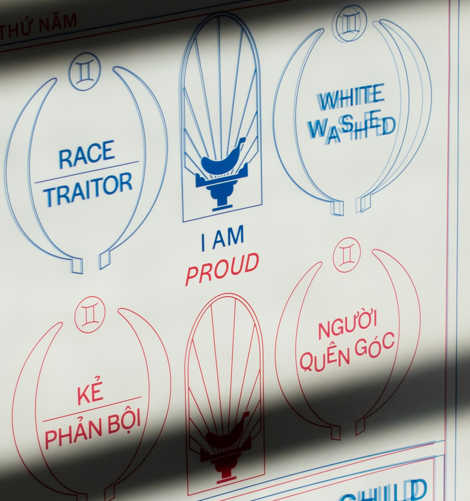
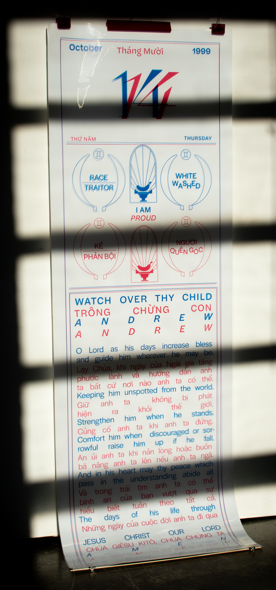

Reclamation
A dedication to the reclamation of the derogatory term, banana. Taking inspiration from the design and function of an Asian calendar and how it embodies multiple elements and various languages. The text is from a Christian prayer that hangs above my bed, the date is my Gotcha day, and the imagery is my reclamation.
Full poster
Full poster



